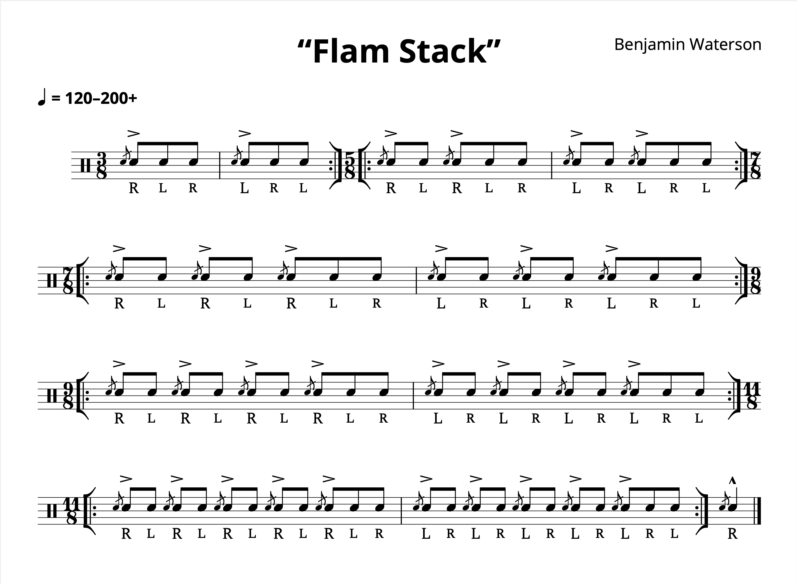
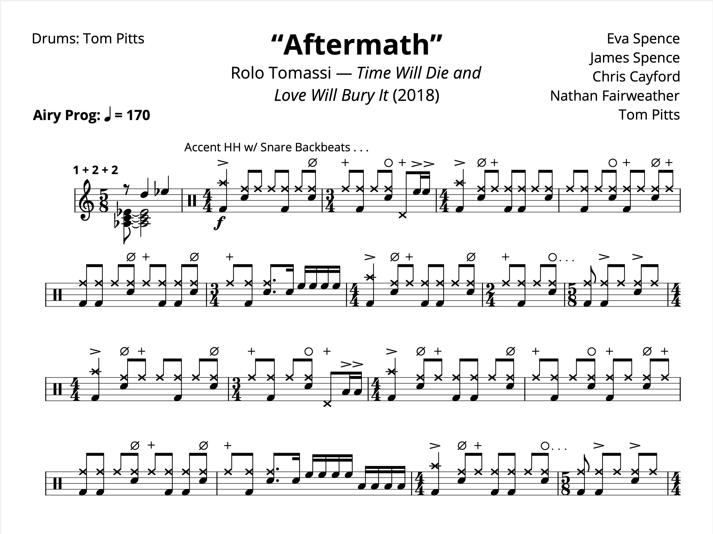
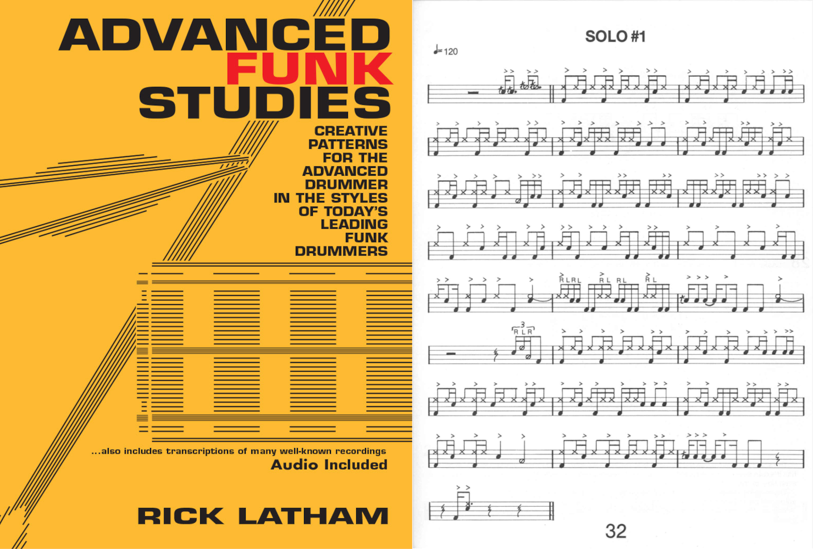

Tagged: 2021
Charlie Watts (1941–2021) + Transcription: “Midnight Rambler” — Charlie Watts with the Rolling Stones
Posted on August 29, 2021

Well, it seems by now that everyone in the music world has paid their respects to Charlie Watts after his recent passing at the age of 80. The cause of death is not known at the moment; Charlie had a recent heart procedure at the start of August, but he was otherwise reported to be in good health. Read More . . .
Chart: Mario Kart 8 Main Theme + Pratice Loop
Posted on August 22, 2021

I know I’m gonna sound like a weeb for saying this, but I must thank all the Japanese composers who have spent the last 20 years writing great big band music for their TV shows and video games. I mean, I know there’s probably more western entertainment with some killer (original) big band music that I just haven’t found yet… but in the meantime, the Land of The Rising Sun will keep me busy. Read More . . .
Exercise: “Flam Stack”
Posted on August 15, 2021
In the year since I’ve been blogging, it’s dawned on me that I haven't shared any original practice materials to the site. Let’s change that this week with a little flam exercise I cooked up a few years ago and have since named “Flam Stack”. Read More . . .
Know Your Tempos — Jimi Hendrix
Posted on August 8, 2021

I just realized that I haven’t done a “Know You Tempos” post in months since I did my first one back in January. So here’s another one of these posts, shamelessly stolen from Todd Bishop. I think I’ll just start using a boilerplate description of what “Know Your Tempos” means: Read More . . .
Review: Advanced Techniques for the Modern Drummer by Jim Chapin
Posted on August 4, 2021

When it comes to learning jazz, many drummers are often steered towards two very famous books: Advanced Techniques for the Modern Drummer by Jim Chapin, and The Art of Bop Drumming by Jim Chapin. Both of them are pretty much the default answer online for drummers inquiring about how to learn jazz. I’ve been through both books and I want to write about both of them — since I picked up Advanced Techniques first, I’ll review it first. Read More . . .
Joey Jordison (1975–2021)
Posted on August 1, 2021

I did have a book review planned for today, but I’m gonna go ahead and push that back to this Wednesday. You see, news broke this past week that Slipknot founding member and modern heavy metal drumming hero Joey Jordison passed away in his sleep at age 46. I figured I’d say a few words. Read More . . .
Chart: “Rush” from Cowboy Bebop
Posted on July 25, 2021

This week, I was going to write about MuseGroup, the parent company behind MuseScore. Since the start of this summer, there’s been a huge kerfuffle involving the MuseGroup’s control of Audacity. Most recently, the MuseGroup has been vaguely threatening a Chinese expatriate with refoulement in response to a MuseScore downloader browser extension.
The thing is, I don’t really know if I have anything to add to that discussion; much like the rest of the internet, MuseGroup’s behavior is a bit outrageous, and I have some abstract unease about the future of MuseScore. So instead, let’s talk about something else. Read More . . .
Transcription: “Aftermath” — Tom Pitts with Rolo Tomassi
Posted on July 18, 2021
Rolo Tomassi was recommended to me a few years ago, sometime after their album Time Will Die and Love Will Bury was released. The song Apple Music gave to me was “Aftermath”, and I really dig the tune. It’s got some rather ethereal verses and a very powerful ending. However, I soon discovered afterward that I had fallen victim to a bit of a bait and switch since most of the band’s catalog consists of some gnarly music with harsh vocals.
Whatever, this song’s still great. I want to use it as an opportunity to talk more about mixed meter playing since I haven’t written about it much; that is to say, songs that change time signature very often. Read More . . .
Transcription: “Lycanthrope” — Travis Barker with +44
Posted on July 11, 2021

When I was a freshman in college, I had to deal with the debacle of iCloud and Apple Music destroying my music library. In the midst of that, I rediscovered +44’s one and only album, When Your Heart Stops Beating. +44 was cooked up by Mark Hoppus and Travis Barker after their previous band Blink-182 broke up for the first time. I don’t really remember this album getting released; I think the first time I heard it was around 2007–08. Apparently, it was highly anticipated, so maybe people thought +44 would be the next Blink-182. Read More . . .
Sheet Music Play–Though Experiments
Posted on June 27, 2021

I really have a deep appreciation for well–engraved sheet music. I know sheet music is supposed to have a very utilitarian purpose more than anything else, but there’s something very artful about good sheet music, and I’m not talking sheet music that’s purposefully meant to be a work of art. Without a doubt, there’s also something very… off–putting about sheet music that crams notes on top of one another in a nightmarish web.
One thing I’ve been wanting to do for some time is to sync up a sheet music playthrough with audio of a performance. Read More . . .
Natural Born Killer Released!
Posted on June 10, 2021

Not much to talk about this week, but last Friday, my band’s debut EP, Natural Born Killer, was released to the public. Read More . . .
Transcription: “Ten Years Gone” — John Bonham with Led Zeppelin
Posted on June 13, 2021

I probably have 12 or so full–length transcriptions laying around in a WIP folder that I haven’t shared yet, and I’m not really sure if I ever will. At least not in their current form, since note–for–note drum sheet music for an entire track often isn’t necessary. But today, I decided to share my interpretation of Led Zeppelin’s “Ten Years Gone”. I know, a full song! How exciting.
Like “How Many More Times”, this was a Zeppelin song that escaped me for a few years after I first got into the band. I really never gave this track a proper listen until right after I graduated high school. And I must say, the tune is one of Zeppelin’s most engaging and emotional. Read More . . .
Transcription: “Voodoo Chile” — Mitch Mitchell with Jimi Hendirx
Posted on June 6, 2021

Now that it’s finally warming up, it’s time for some Jimi. I probably shouldn’t let the weather dictate my musical tastes, since (conceptually) music should be able to exist as an artistic statement on its own… but I just don’t feel like listening to Hendrix when it’s snowing outside. I first got into Hendrix in the springtime when things were warming up, although after looking into it, I discovered that two of the three Experience albums (including this one) were released in the winter/fall.
Within different drumming circles, I don’t see the blues discussed much. Everyone wants to know how to play jazz or how to get fluent with double bass, but the blues often get overlooked these days. Read More . . .
First EP — Lessons Learned
Posted on May 30, 2021

Sorry for my recent unannounced absence — I missed last week’s post after receiving an inoculation last Wednesday that promptly knocked me on my butt for a few days. Once I got over that, it was crunch time for my band’s EP. The last step we had to take was artwork, which ended up falling to me. And with the prospect of pushing this release back again, I had to cook something up in a timely manner.
But now I can announce that the Natural Born Killer EP has been sent to our distributor, and is on its way to streaming services. At long last, the nightmare is over… on to the next one! After two years on this project, I want to write a bit about the process, since this is the first studio project that I (and my bandmates) we ever a part of, and… we really did a lot of things wrong. So let’s go through it all. Read More . . .
An Honest Look at the Rudiments
Posted on May 16, 2021

Earlier this week, someone posted on r/drumming asking about the rudiments. I chimed in on the thread but I feel like expanding on my thoughts more here, since I have yet to talk at length about the rudiments (and there’s a lot to talk about). The OP was specifically asking about what is and isn’t a rudiment (i.e. why is this lick a rudiment, but not that one). Read More . . .
Transcription: “Stars” — Ray Luzier with KXM
Posted on May 9, 2021

I have a big list of drummers that I need to listen to more. In fact, for most of the drummers I know of, I have yet to fully explore and appreciate their discographies. When you first hear about an artist, you’re often not sure where to even begin. For many, the simple approach is to just punch something in on YouTube.
I feel a bit uneasy about doing that; in the case of drummers, you’re likely to get some live drum solo; however, I regard albums to be more musically important (i.e. drumming played on actual records). Read More . . .
Chart: “Tank!” from Cowboy Bebop
Posted on February 21, 2021

Now that things are starting to warm up, I’ve started rewatching one of my favorite shows, which quite possibly has the most badass theme song ever:
Even if you’ve never heard this tune before, you should probably conclude by the 15 second mark that it’s a lot of fun to play on pretty much any instrument. And you know what? It is! Read More . . .
Review: Advanced Funk Studies by Rick Lantham
Posted on April 25, 2021
I don’t really have a schedule for doing reviews and I don’t want to burn through them, but I really enjoyed writing about A Funky Primer, so let’s have another one. I said I would review these books more or less in the order I went through them, but after A Funky Primer I want to jump ahead a bit to another funk book called Advanced Funk Studies, written by Rick Lantham and published in 1980. I think this was the ~4th book I went through. Read More . . .
Response: Rick Beato’s “TOP 20 DRUM INTROS OF ALL TIME”
Posted on April 18, 2021
I still want to add some more variety to the site — I don’t want the blog to be an endless stream of sheet music. I also have a good collection of projects that I don’t want to blow through, since they take a bit of time to whip up.
So today I’m going to respond to a video published back in August of 2019: “TOP 20 DRUM INTROS OF ALL TIME”. The video was made by Rick Beato, a music YouTuber who spent most of his life as a producer, and now talks about engineering and theory. I’m a little late with this, but… why not? Read More . . .
Transcription: “Salt of the Earth” — Alex Rüdinger with Good Tiger
Posted on April 11, 2021

Alrighty, time for something a bit more interesting. I found this band about three years ago, when Apple Music recommended them to me. They had just released an album, and this track “Salt of the Earth” was chosen for a new music playlist. It caught my attention right away when it came on. While the band wasn’t familiar, I recognized the drummer Alex Rüdinger after I looked into the group. Alex has played music with a whole slew of bands, most of it being rather intense metal. Not usually my cup of tea, so I wasn’t very familiar with Alex’s playing at this point. Read More . . .
Transcription: “Rock and Roll” — John Bonham with Led Zeppelin
Posted on April 4, 2021

Another sleepy post this week: I don’t have much to add about this tune, I just wanted to get my interpretation down on paper, since (surprisingly) there aren’t many transcriptions of this solo out there. Read More . . .
Review: A Funky Primer by Charles Dowd
Posted on March 28, 2021

It was a bit challenging to work on anything especially ambitious this week: I’ve been hard at work finishing up my band’s new website, and we have just one or two more things to take care of for our EP which has been keeping me busy as well. Add to that a bunch of work I’m doing on this site to make it easier to read on mobile. Oh, and then there’s that whole business of somebody shooting up the grocery store I used to go to up until barely a year ago. I guess you could say that’s been messing with my productivity. Read More . . .
This Week in Boulder
Posted on March 24, 2021

So Monday night I was getting ready to watch CU play Florida State in the round of 32, when my excitement was derailed by news of a shooting that happened hours earlier in Boulder. Some jerkoff went to a King Soopers and killed ten people (including a police officer) before being arrested and hauled off to a hospital.
It’s a bit chilling for me, since I used to go to that store all the time. Read More . . .
Transcription: “Jazz Crimes” — Tommy Igoe with The Tommy Igoe Groove Conspiracy
Posted on March 21, 2021

Oh, Tommy Igoe… you probably have one of two opinions of him. For many, Igoe is the mastermind behind Groove Essentials and Great Hands for a Lifetime, which are adored pieces of eduction for many drummers. I’ve spent quite some time with both, and they’re no doubt ambitious and well done projects.
On the other hand, you might have a very different opinion of Tommy if you’ve ever browsed his socials, especially his Instagram page. In fact, I often see threads on Reddit from drummers talking about Tommy’s behavior on the internet. Read More . . .
Transcription: “F.C.P.S.I.T.S.G.E.P.G.E.P.G.E.P.” — Andrew Forsman with The Fall of Troy
Posted on March 14, 2021

Depending on how old you are, you may look at the name of this song and thing what the hell kind of band is this? Well, many folks in my generation (and thereabouts) were first introduced to The Fall of Troy via good old Guitar Hero:
I’ll be shocked if you watch more than 30 seconds of that. Read More . . .
Transcription: “Hey Joe” — Mitch Mitchell with Jimi Hendrix
Posted on March 7, 2021

Yeah, I should probably know better than to talk about “Hey Joe” in the 21st century. But there’s no denying that it’s an incredible song, despite the rather… disturbing lyrics.
There’s actually some interesting speculation online as to why Jimi decided to make his debut single a cover song about a man who murders his wife and tries to hightail it to Mexico. Discussions usually reference Jimi’s turbulent military service (e.g. being conscripted into the Army and basically kicked out of it) as possibly drawing him to a song about violence, betrayal, and freedom. I’ve even found comments about how the background vocals are meant to represent the ghost of Joe’s wife, haunting over him as he tries to cheat the gallows. Read More . . .
“Advanced” Music Theory (For Drummers)
Posted on February 29, 2021

In my Unpopular Opinions post, I brought up my frustration with drummers throwing around “advanced” music theory terms to look cool, without really investigating these terms mean. I said in that post that there was a chance I would write about this in the future, and here we are. I have four topics to discuss: syncopation, polyrhythm, polymeter, and metric modulation. I want to share my understanding of what these terms mean, and I’ll try to address what seems to be the omnipresent confusion regarding them. Read More . . .
Chart: “Chainlink Charge” from Super Mario 3D World + Practice Loop
Posted on February 21, 2021

This project has a bit of a story behind it.
Todd Bishop over at Cruise Ship Drummer is a big fan of practice loops, which he usually makes himself and shares on YouTube. See what they’re all about on his website.
Meanwhile, about seven(!) years ago I was playing Super Mario 3D World for the first time, and I remember really digging the soundtrack, especially for levels like “Chainlink Charge”. Read More . . .
Unpopular Opinions
Posted on February 7, 2021

So, a few weeks ago, someone on r/drums started a thread basically asking about unpopular drum opinions. I couldn’t help myself, and I left quite a lengthy comment, since I find myself disagreeing with most of what happens on the internet with regards to drumming.
My comment ended up being at the top of the thread, becoming the most popular thing I’ve ever done on the site, with a whopping 29 upvotes. Read More . . .
Transcription: “Hipsterminate” — Richard Kass with Thunkfish
Posted on January 31, 2021

There are deep cuts… and then there’s this. I told you I would be back with something interesting!
Over at r/drumming (a subreddit that’s basically the cooler relative of r/drums) someone asked for help in making sense of a drum solo in the tune “Hipsteriminate” by a band called Thunkfish. Read More . . .
Know Your Tempos — Led Zeppelin
Posted on January 24, 2021

If you’re like me and you’ve ever made the mistake of watching Whiplash, you probably sent your palm through your forehead at the bit where Fletcher points to a metronome marking and tells Andrew to “count me a 215” before he starts going on about “I am to understand that you cannot read tempo?!”. He also calls Andrew a retard, because edgy movie is edgy. If only I knew that the film was just getting started… (more thoughts on that here).
Well, despite the fact that “read tempo” is a phrase that I’ve never heard a real musician use, you can indeed develop a skill like this. Read More . . .
MuseScore 3.6 Released
Posted on January 20, 2021

I wanted to make a short post discussing my notation software of choice, MuseScore, since a somewhat significant update just came out at the end of last week. The MuseScore team calls it an “engraving” release, adding some neat features such as default indenting on scores (which I previously always did with a spacer), in addition to a feature that will organize instruments on a conductor score (using templates such as “Orchestra” or “Jazz Band”). Perhaps most significantly, a new music font was added, “Leland”. Read More . . .
Transcription: “Feeling This” — Travis Barker with Blink-182
Posted on Febuary 17, 2021

Yeah yeah, this song’s been done dozens of times, but I took a shot at it a few years ago and I figured I’d share it. “Feeling This” is often considered a modern day drumming classic — it’s not hard to see why. “Feeling This” is one of the best songs Blink-182 ever did; just listen to the ending vocals in isolation to see the band’s Studio MagicTM at work. Read More . . .
Groove: “Requests” — Makaya McCraven
Posted on January 10, 2021

In the weeks before the 2020 election, I kept seeing these rather hip and sleek ads for the The New York Times. You may know what I’m talking about, have a watch for yourself:
It certainly gets your attention, especially with that music. Read More . . .
Transcription: “The New Year” — Jason McGerr with Death Cab For Cutie
Posted on January 3, 2021

I know we just looked at Jason McGerr back in November, but when else am I gonna share a song called “The New Year”? So then, I have some more Jason McGerr groovage for you. The tune is off of Death Cab for Cutie’s masterpiece Transatlaticism, an album so good even Pitchfork realized they had fucked up when they revisited the LP ten years later, bumping their original score from a 6.4 to an 8.4. Read More . . .
Wrapping Up 2020
Posted on January 1, 2021

Now that the new year is upon us, it’s time to wrap up the last 12 godforsaken months. I can’t say I have very high hopes for 2021, but in the meantime, I guess I should take some inventory.
For one, I graduated college this past May. At long last, I officially have one major, two minors, and a certificate to my name. It was a bummer I didn’t any sort of commencement (not like I really cared), but hey, now I have a diploma. Read More . . .